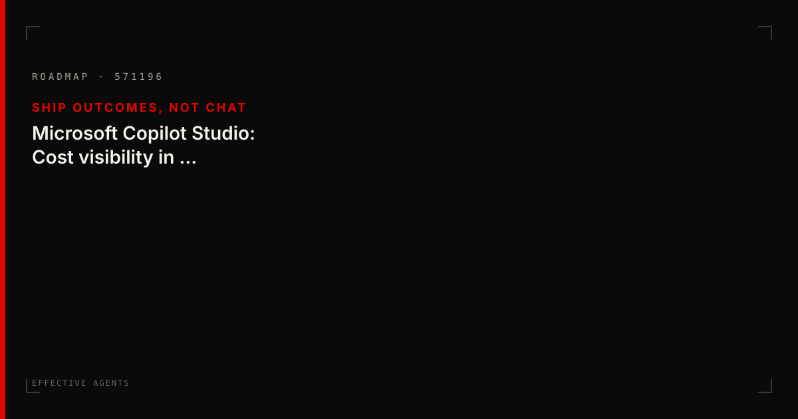

Blog · 2026-09-15
Microsoft Copilot Studio: Cost visibility in Monitor tab
Ship Outcomes, Not Chat

What it is
Microsoft Copilot Studio: Cost visibility in Monitor tab. Tags: Copilot Studio, Copilot, Agent. Roadmap id 571196.
What it does
<p>Now makers will have clear visibility into their consumption costs directly within Monitor tab at both a per-agent level and an estimated breakdown of those costs across the agents lifecylce. This will allow makers to see costs distributed across activities such as…
What to worry about
Cost visibility without outcome metrics can become another chat bill. Tie spend to completed work.
What it means for users
Makers and CoE leads get clearer levers on agent lifecycle cost and behaviour — use them to prove effectiveness, not just publish bots.
Source: Microsoft 365 Roadmap · Markdown mirror